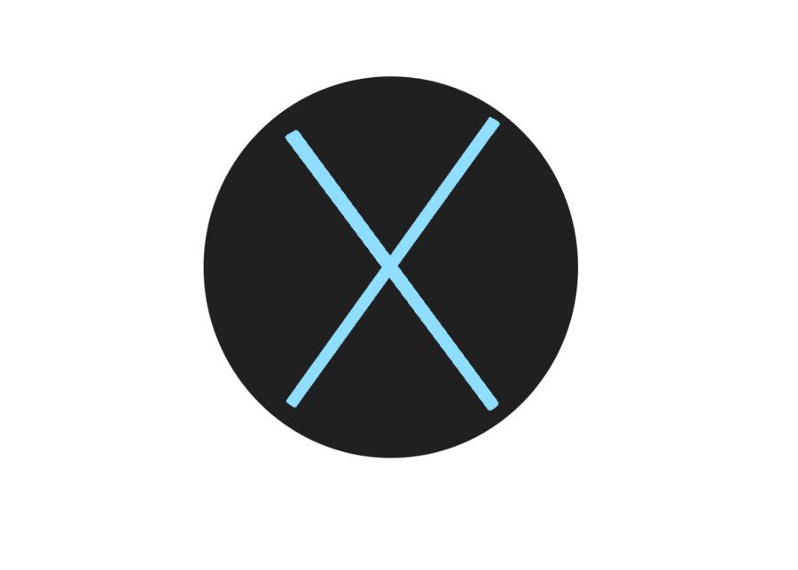
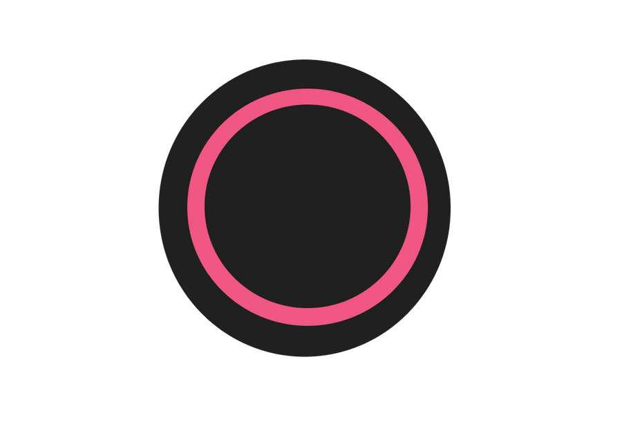

Below, I have placed some terms and symbols that may not be known to people who play fighting games. Please use the navigation bar above to move from page to page. I have linked the terms from the other pages, back to this table for easy reference.
| Term/Symbol | Description |
|---|---|
| 1 | or |
| 2 | or . Back arm punch. Also known as "2" |
| 3 | or . Front leg kick. Also known as "3" |
| 4 | or . Back leg kick. Also known as "4" |
| MB | Meter Burn. or |
| Zoner | A playstyle that uses far reaching attacks and projectiles to keep an opponent at bay. Slowly takes away opponent's health and has one or two close range attacks to knock the opponent back and resume zone style. |
| Rushdown | A playstyle that encourages an 'In your face' approach. Faster attacks at close range but usually weaker damage output. |
| F/B/U/D | Forward/Back/Up/Down. Directional input on thumbpad. |
| Chain | When specific normal moves cancel into each other. |
| Cancel | Stopping the animation of one move, with the beginning of another. Creates smooth combo chains. |
| Juggle | Hitting an enemy multiple times, suspending them in the air for the duration of the attack chain. |